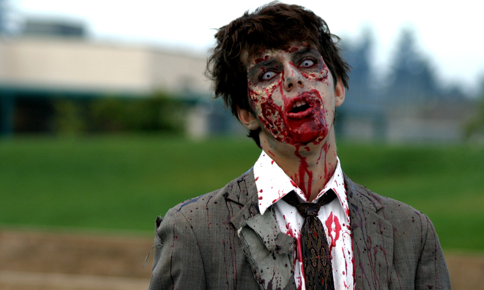

Essential Skills for Zombie Survival
Shelter:
Try to build as good a shelter and bed as you can. Use everything you can think of for insulation. Sleeping on bare ground even in warm climates CAN KILL YOU!
Fire:
A fire is mans best friend in the wild. It provides heat, light to work by, protection from predators, a rescue beacon, a place for cooking food and decontaminating water, etc, etc...
Signals:
You won’t be rescued if you can’t be found. You need to be seen or heard at least several hundred yards away or from the air.
Water:
You can go a day or two without water, but eventually you must drink. An adult should drink at least a couple of liters per day.
Food:
Food isn’t something you need to consider unless rescue is a good many days or weeks off. But you will begin feeling weak and lethargic and less able to effect your own survival after a few days. Plants are a risky proposition, so if you don't know FOR SURE that something is edible... don't even touch it. Animals are another thing. If it can Walk, Crawl, Fly, Hop or Swim... put it in your pot!